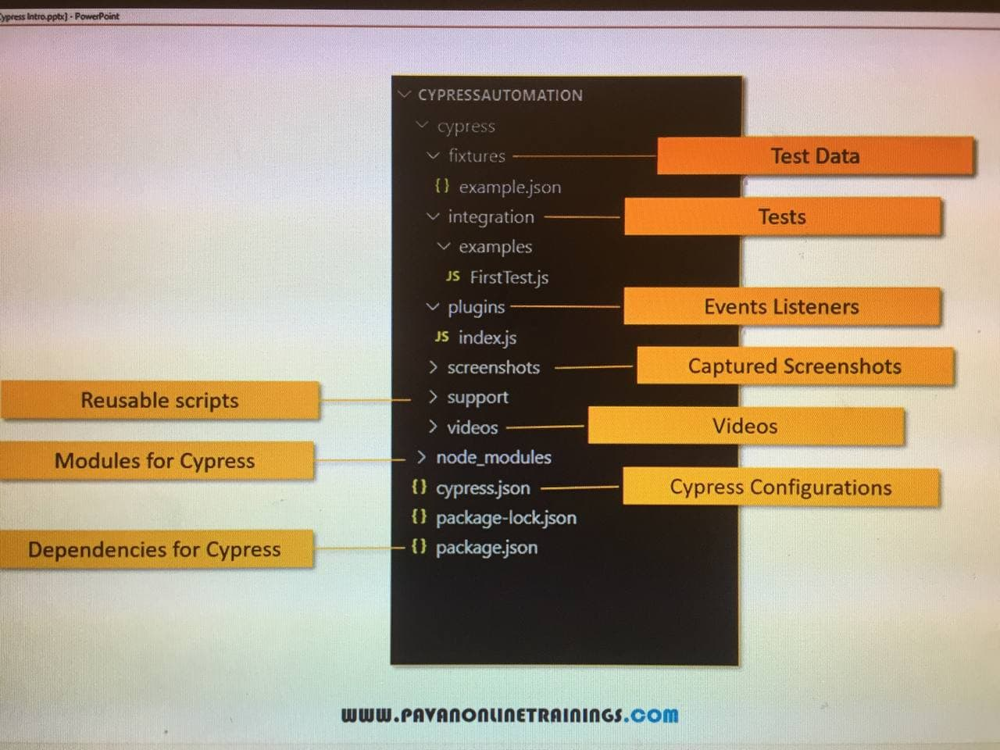
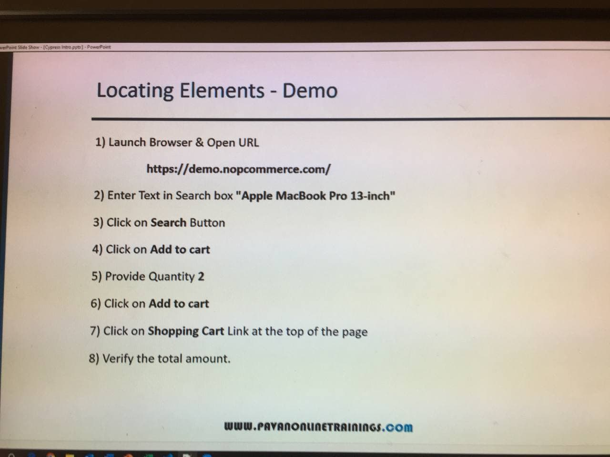

*******************************************************
VIDO ONE - CYPRESS INTRODUCTION
*******************************************************
what is cypress?what is cypress?
- next generation front end testing tool built for the modern web applications
- uses javascript to write automation testing
- built on node.js and comes packaged as an npm module
- as its built on node.js,it uses javascirpt for writhing tests.but 90% of coding can be done using cypress built commands
which are easy to understand
- very simple wen comared to other tools
- cpress is having different architecture when compared to seleniume.
- we can write faster,easier and more relaible tests using cypress
selenium vs cypress architectural defferences
*******************************************************
- selenium and other tools opeate by running outside of the browser and excuting remote commands across the network.
- cypress engine directly operates inside the browser(the browser is exuting the test code).
- cypress enables us to listen and modify the browser behavior at run time by manipulating DOM and altering network requests and responses
cypress ecosystem
*******************************************************
cypress is an open source tool and consits of two components
test Runner - helps to set up and start writing tests.
Dashboard service (recording tests) - the dashboard provides insight into what happened when your tests ran.
how cypress is different than other tools
*******************************************************
- cypress doesnt use selenium.
- cypress focuses on doint end to end tsting well
- cypress works on any front-end framework or websites.
- cypress test are only written in javascript
- cypress tests are only wirtten in javascirpt
- cypress is all in one
- cypress is for developers(unit testing and integration testing) and QA engineers(use for functionality and API testing)
- cypress runs much faster
features of cypress
*******************************************************
- Time travel (take time snapshot which allow us to see each and every steps)
- real time relods (automatic relodes wehen change is happen)
- spies,stubs and clocks (verify and control funciton behaviour and server responces)
- consistent results (stable and consistant result by directly contacting the browser)
- debuggability (errors are more redable )
- automatic waiting
- network traffic control
- screenshots and videos
you can see it on there official website.... cypress.io
limitations of cypress
*******************************************************
- support limited set of browsers like chrome,canary,electron
- page object model is not supported
- Tough to read data from files
- third party reporting tool integration is limites.
*******************************************************
VIDEO TWO -SETUP AND INSTALLATION OF CYPRESS
*******************************************************
- Download Node and npm
- set NODE_HOME Environment variables
- Create Cypress working Folder
- Generate package.json
- Install cypress
- Download visual studio code editor
*******************************************************
VIDEO THREE - SETUP AND INSTALL IN MAC
*******************************************************
- Download Node and npm
- Create cypress workin gfolder
- Generate package.json
- Install Cypress
- Download visual studio code editor
*******************************************************
VIDEO FOUR - TEST Runner
*******************************************************
- how to launch test runner in cypress?
- explore sampel test in cypress
to lounch test the following command is done : npx cypress open
*******************************************************
VIDEO FIVE - WRITING FIRST TEST CASE
*******************************************************
- cypress use diffrent frame works but mainly it recommand using MOCHA frame worka nd it come along with cypress
- describe contains the test suit and it contains test case adn all came from MOCHA
- ALL testing is done inside integration Folder
describe('Test suit',function(){
it('test cases one',funciton()=>{
--- here we will write a test steps----
})
it('test cases two',funciton()=>{
--- here we will write a test steps----
})
})
*******************************************************
VIDEO SIX - RUN TESTS IN CYPRESS TEST RUNNER AND CYPRESS TERMINAL
*******************************************************
we use : node_modules/.bin/cypress run
when running the above command it will not open the browser and using electron browser we see everything in TERMINAL
and it will be running headless mode but if we weant to add head we can add the --headed syntax at the end
node_modules/.bin/cypress run --headed so by doing this it will lounch a brwoser and we can see everyting and
by default it will open in electron browser.if we want to change the browser we can select our broser also
node_modules/.bin/cypress run --headed --browser chrome
To test a specific test we can do the following
node_module/.bin/cypress run -spec "directory of the test file relative path"
example ;- node_module/.bin/cypress run -spec "cypress/integration/example/firstTest.js"
*******************************************************
VIDEO SEVEN - FOLDER STRUCTRUE
*******************************************************

*******************************************************
VIDEO EIGHT - LOCATING ELEMENTS
*******************************************************
cy.get() -- is the method used to locat an element based on the selector we passed
it can use diffrent selectores like
- .class
- example
- #id
- [attribute=value]
- .class[attribute=value]
*******************************************************
VIDEO NINE - LOCATINT ELEMENTS -DEMO

here we did the example in mySecondTest.js
*******************************************************
VIDEO TEN - Interacting with UI ELEMENTS
*******************************************************
UI ELEMENTS
commands
- VISIT()
- URL()
- GET()
- TITLE()
here we did the example in InputBoxAndRadioButton.js
*******************************************************
VIDEO ELEVEN - UI ELEMENT CHECK BOX AND DROUP DOWNS
*******************************************************
we did example on checkboxanddroupdown.js
*******************************************************
VIDEO TWELVE - ALERT
*******************************************************
we did example on alerthandeling.js
*******************************************************
VIDEO THIRTY-GO()
*******************************************************
go back and forward to the previous or next url in the browser's hisotry
*******************************************************
VIDEO FOURTY - HANDELING TABLES
*******************************************************
- check the value presence anywhere in the table.
- check value presence in specific row and column
- check value presence based on condition by iterating rows.
- eg;- check the book name "Master in Java" whose author is Amod
*******************************************************
VIDEO FIFTY - CYPRESS HOOKS
*******************************************************
- before
will run once before everthing start
- after
will run once after everything is ended
- beforeEach
will run before each test
- afterEach
will run after each test
example under hooks.js
*******************************************************
VIDEO SIXTY - CYPRESS FIXTURES
*******************************************************
is a file which contains a data and that data is used in the test cases and the test is deriven by the data
the data can be diffrent type like json and so on
and all fisture files should be present in the fixtures folder
example under fixtures.js
*******************************************************
VIDEO SEVENTY-CUSTOM COMMANDS
*******************************************************
will allow you to build a custom command
the command is written under support folder inside commands.js
example under customCommand.js
*******************************************************
VIDEO EIGHTY-PAGE OBJECT MODEL PATTERN
*******************************************************
page object model is a design pattern where page objects are
separated from Automation test scripts
Advangates
- Reusability
- Maintainablility
*******************************************************
VIDEO NIGNTEEN-PAGE OBJECT MODEL PATTERN
*******************************************************
- how to run cypress from the command line
- how to specify whihc spec file to run
-
woring iwht dashbord features
- capture screenshots
- recording